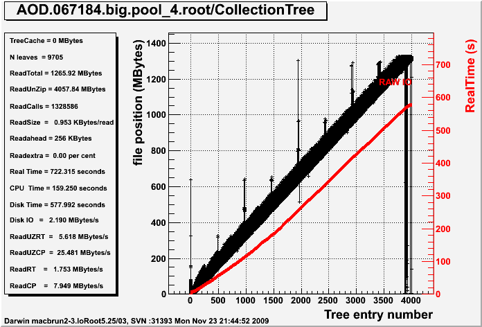
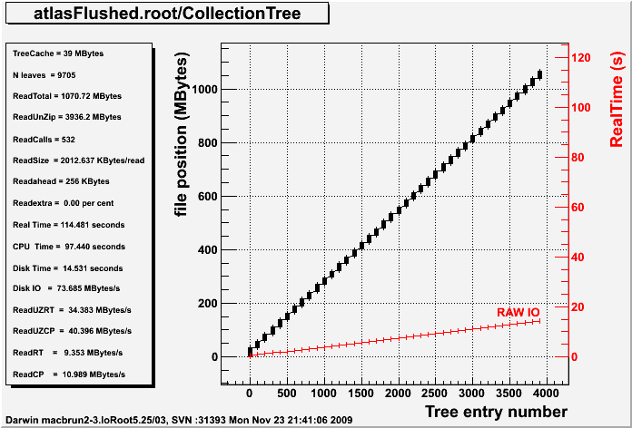

Min$(formula),Max$(formula):return the minimun/maximum (within one TTree entry) of the value of the
elements of the formula given as a parameter.MinIf$(formula,condition),MaxIf$(formula,condition):return the minimum (maximum) (within one TTree entry)
of the value of the elements of the formula given as a parameter
if they match the condition. If not element match the condition, the result is zero. To avoid the
the result is zero. To avoid the consequent peak a zero, use the
pattern:
tree->Draw("MinIf$(formula,condition)","condition");
which will avoid calculation MinIf$ for the entries that have no match
for the condition.if (tree->SetBranchAddress(mybranch,&myvar) < 0) {
cerr << "Something went wrong\n";
return;
}
The possible return values are:Slides from a recent seminar describing the main features of ROOT IO and Trees and the recent improvements described below are available at http://root.cern.ch/files/brun_lcgapp09.pptx or http://root.cern.ch/files/brun_lcgapp09.pdf .
The baskets are flushed and the Tree header saved at regular intervals (See AutoFlush and OptimizeBaskets)
When the amount of data written so far (fTotBytes) is greater than fAutoFlush (see SetAutoFlush) all the baskets are flushed to disk. This makes future reading faster as it guarantees that baskets belonging to nearby entries will be on the same disk region.
When the first call to flush the baskets happens, we also take this opportunity to optimize the baskets buffers. We also check if the number of bytes written is greater than fAutoSave (see SetAutoSave). In this case we also write the Tree header. This makes the Tree recoverable up to this point in case the program writing the Tree crashes.
Note that the user can also decide to call FlushBaskets and AutoSave in her event loop on the base of the number of events written instead of the number of bytes written.
void TTree::OptimizeBaskets(Int_t maxMemory, Float_t minComp, Option_t *option)
This function may be called after having filled some entries in a Tree using the information in the existing branch buffers, it will reassign new branch buffer sizes to optimize time and memory.
The function computes the best values for branch buffer sizes such that the total buffer sizes is less than maxMemory and nearby entries written at the same time. In case the branch compression factor for the data written so far is less than compMin, the compression is disabled. if option ="d" an analysis report is printed.
This function may also be called on an existing Tree to figure out the best values given the information in the Tree header
TFile f("myfile.root");
TTree *T = (TTree*)f.Get("mytreename");
T->Print(); //show the branch buffer sizes before optimization
T->OptimizeBaskets(10000000,1,"d");
T->Print(); //show the branch buffer sizes after optimization
virtual void AddBranchToCache(const char *bname, Bool_t subbranches = kFALSE); virtual void AddBranchToCache(TBranch *branch, Bool_t subbranches = kFALSE); virtual void PrintCacheStats(Option_t* option = "") const; virtual void SetParallelUnzip(Bool_t opt=kTRUE); virtual void SetCacheEntryRange(Long64_t first, Long64_t last); virtual void SetCacheLearnEntries(Int_t n=10); virtual void StopCacheLearningPhase();
void TTree::SetAutoFlush(Long64_t autof)
The logic of the AutoFlush mechanism is optimized such that the TreeCache
will read always up to the point where FlushBaskets has been called.
This minimizes the number of cases where one has to seek backward when reading.
Example of use
{
TFile *f = TFile::Open("RelValMinBias-GEN-SIM-RECO.root");
T = (TTree*)f->Get("Events");
Long64_t nentries = T->GetEntries();
T->SetCacheSize(10000000);
T->AddBranchToCache("*");
TTreePerfStats *ps= new TTreePerfStats("ioperf",T);
for (Int_t i=0;i<nentries;i++) {
T->GetEntry(i);
}
ps->SaveAs("atlas_perf.root");
}
then, in a root interactive session, one can do:
root > TFile f("atlas_perf.root");
root > ioperf->Draw();
root > ioperf->Print();
The Draw or Print functions print the following information:
TreeCache = TTree cache size in MBytes N leaves = Number of leaves in the TTree ReadTotal = Total number of zipped bytes read ReadUnZip = Total number of unzipped bytes read ReadCalls = Total number of disk reads ReadSize = Average read size in KBytes Readahead = Readahead size in KBytes Readextra = Readahead overhead in percent Real Time = Real Time in seconds CPU Time = CPU Time in seconds Disk Time = Real Time spent in pure raw disk IO Disk IO = Raw disk IO speed in MBytes/second ReadUZRT = Unzipped MBytes per RT second ReadUZCP = Unipped MBytes per CP second ReadRT = Zipped MBytes per RT second ReadCP = Zipped MBytes per CP second
The Figure below shows the result for an original non optimized file when the Tree Cache is not used.

The Figure below shows the result for the above data file written with the new version of ROOT and when the Tree cache is activated.
